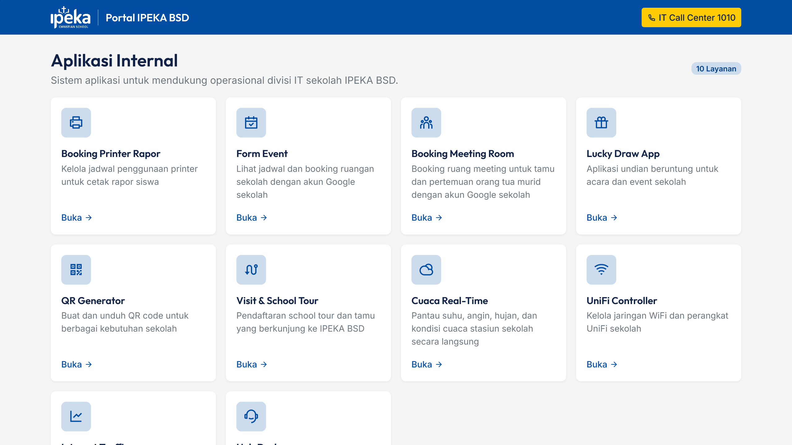

Tanggal: 09 Nov 2026 (Audited: 10 Nov 2026)
Target SUT: https://app.ipekabsd.my.id + 10 Subdomain Layanan
QA Engineer: Benedict Timothy
Methodology: Manual QA with AI-Assisted Execution & Playwright Cross-Browser Verification (Human-in-the-Loop)
QA Artifacts: PRD.md, TestPlan.md (TP-IPEKA-R2-V1.0), TestCases.md/xlsx, TraceabilityMatrix.md/xlsx (15-Column MySkill RTM), EnvironmentConfig.md, Automation/*, Evidence/*, Mobile_Testing/*
| Metric | Value |
|---|---|
| Total Web Test Cases | 116 |
| Passed (Manual + AI-Assisted Verification) | 79 (68,1%) |
| Blocked (Requires School Admin Creds / Prod Write Guard) | 37 (31,9%) |
| Bug Reports Logged | 6 (BUG-001 s.d. BUG-006) |
| Requirements Traced (Bidirectional RTM) | 49 (100% Mapped to Test Cases) |
| Cross-Browser Smoke (Playwright Automation) | 42/42 Passed (Chromium, Firefox, WebKit) |
| Mobile Test Pack (Android 14 / Pixel 7) | 20 Test Cases Prepared (MOB-001 s.d. MOB-020 — Ready for Live Execution) |
| Browser Engine | Smoke Result | Execution Mode | Evidence Folder |
|---|---|---|---|
| Chromium | 14/14 Passed | Automated (Playwright) | Evidence/Chromium (13 screenshots) |
| Firefox | 14/14 Passed | Automated (Playwright) | Evidence/Firefox (13 screenshots) |
| WebKit | 14/14 Passed | Automated (Playwright) | Evidence/WebKit (13 screenshots) |
Smoke suite mencakup portal homepage + keterjangkauan 10 subdomain layanan. Seluruh mesin peramban lulus 100%.
| Bug ID | Title | Module | Severity | Priority | Status |
|---|---|---|---|---|---|
| BUG-001 | School Tour booking disabled ('not open for booking yet') | Visit & School Tour | Medium | Medium | Open |
| BUG-002 | HelpDesk public page shows event timeline only, no ticket form | IT Events & Tasks | Medium | High | Open |
| BUG-003 | Admin PIN login has no visible lockout/rate limit | Authentication/Security | High | High | Open |
| BUG-004 | Internet traffic monitoring uses legacy PRTG freeware (2008) | Internet Traffic | Low | Low | Open |
| BUG-005 | Fragmented authentication across services (Google SSO vs PIN) | Authentication/Security | Low | Medium | Open |
| BUG-006 | Weather placeholder dashes shown before station data arrives | Weather (Eco) | Low | Low | Open |
Sebanyak 37 kasus berstatus Blocked secara transparan karena membutuhkan kredensial Google Workspace sekolah (@bsd.ipeka.sch.id), PIN Admin 6 digit, atau penahanan transaksi write agar tidak mengotori database operasional sekolah. Rincian lengkap tersedia di TestCases.xlsx dan TraceabilityMatrix.xlsx.

Screenshot layanan lengkap tersedia di folder Evidence/<Browser>/.
BUG-001).BUG-003).Prepared by Benedict Timothy — Manual QA with AI-Assisted Tooling. Folder: D:\Test Project\Portofolio QA Manual\03_IPEKA_BSD_Portal_Iterasi_2